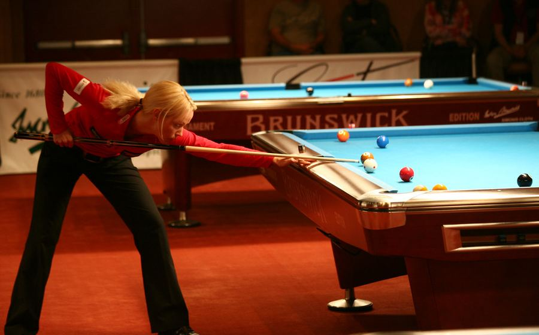

Timnas Indonesia Pastikan Tiket ke Putaran Final: Catatan Statistik Lengkap Perjalanan Kualifikasi
Analisis mendalam performa lini pertahanan dan serangan Garuda sepanjang fase kualifikasi.

Duel Kelas Berat Nasional 2026: Siapa Unggul di Atas Kertas?
Perbandingan rekor tanding kedua petinju jelang laga puncak.

Hasil Turnamen 9-Ball Nasional: Juara Baru Muncul dari Jawa Timur
Rekap babak final dan statistik pukulan sepanjang turnamen.

Turnamen Poker Kompetitif Nasional: Profil Juara dan Strategi Final Table
Liputan jalannya final table dari sudut pandang analis permainan.